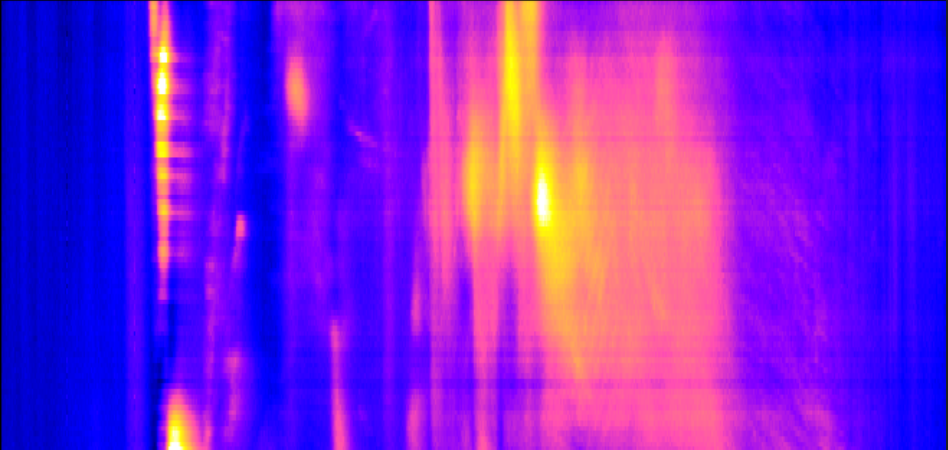
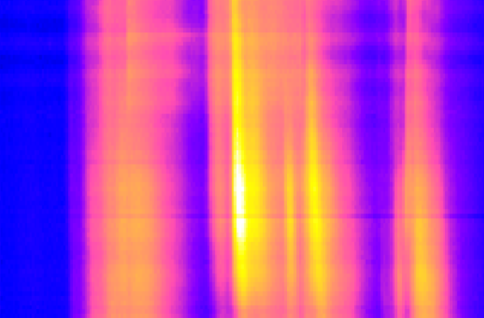
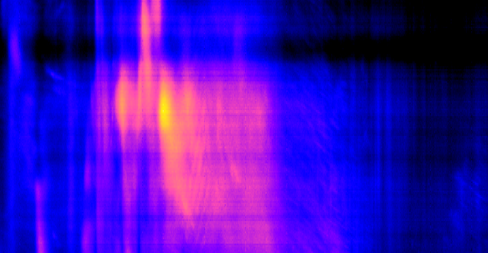
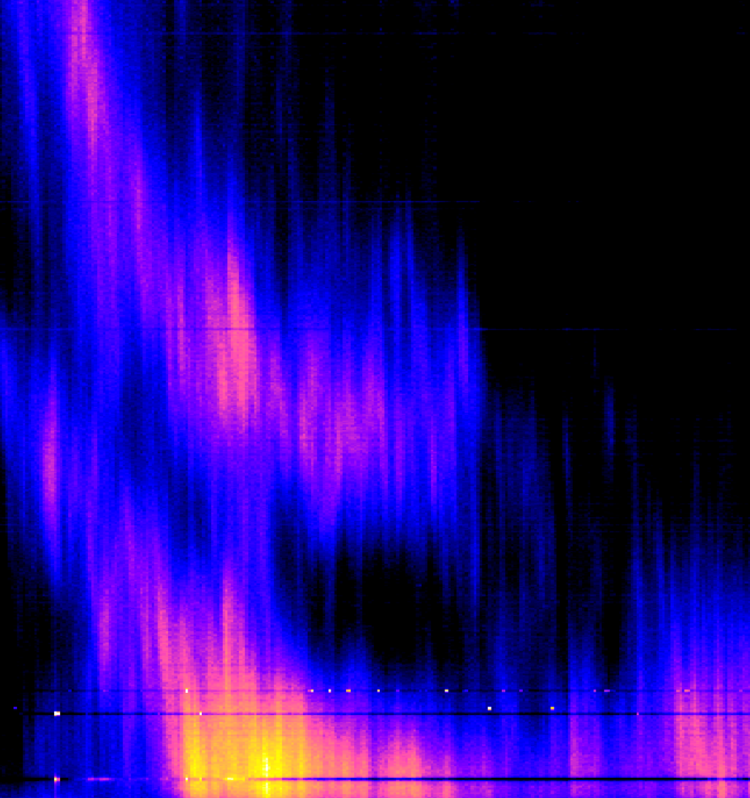

About us
We're building Spectregrams: a global network of low-cost, narrowband FFT spectrometers for solar radio observations.
Each node in the network observes a fraction of the total solar radio spectrum using an omnidirectional antenna, an off-the-shelf software-defined radio, and any Linux computer. Spectra produced by each node are timestamped and calibrated to solar flux units. These spectra are published and collated into a single broadband spectrogram per day. All nodes are coordinated by a central server, with the entire network easily reprogrammable at scale.
- Consistent frontend: Every station uses identical components; the only differences being geography and the computer doing the DSP. The impact of local RFI is minimised through redundancy and geographic diversity of nodes.
- Calibrated data: The data produced by each station is calibrated to solar flux units, and so is easily comparable between stations and to other instruments outside the network.
- Consistent sampling: While each station may operate at a different centre frequency, the spectra they produce are synchronised in time and emplaced on a common grid in the frequency domain. The resulting broadband spectrogram will cover the frequency range of interest with no gaps at a fixed resolution in both the time and frequency domains.
- One file: The data is easily consumable as a single file, per day.
Powered by Spectre.




Blogs
Get Involved
Want to learn more or get involved?